A continuación, se describe el procedimiento realizado para
establecer la conexión entre una aplicación desarrollada en PHP
y una base de datos PostgreSQL alojada en Neon. Durante el
procedimiento se configuraron las herramientas necesarias,
se instalaron las dependencias del proyecto y finalmente se
realizó una consulta a la base de datos.
1
Verificación de PHP
Primero se verificó que PHP estuviera instalado y funcionando
correctamente en el equipo. También se identificó la ubicación
de la instalación de PHP para poder realizar su configuración.
php -v
where php
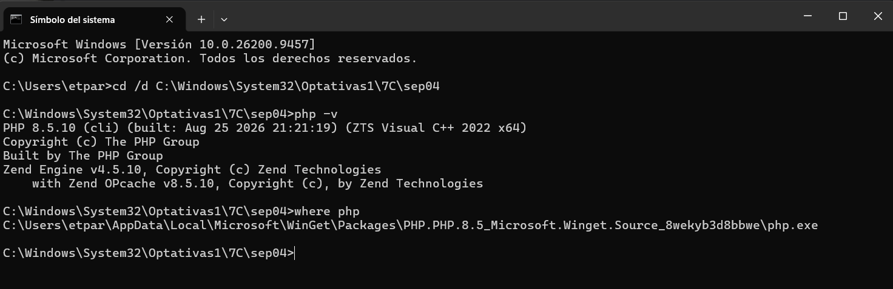
Captura 1. Verificación de PHP y ubicación de su instalación.
2
Configuración de PHP
Dentro de la carpeta de instalación de PHP se utilizó el archivo
php.ini-development como base para crear el archivo
php.ini. Este archivo permite administrar la
configuración y las extensiones utilizadas por PHP.
copy php.ini-development php.ini
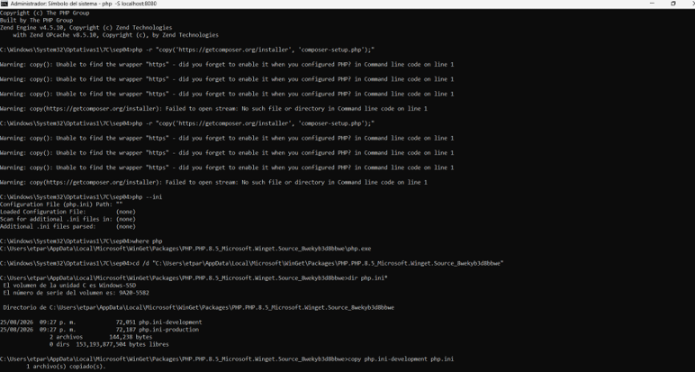
Captura 2. Creación del archivo php.ini para la configuración de PHP.
3
Habilitación de extensiones de PHP
En el archivo php.ini se configuró la carpeta
donde se encuentran las extensiones de PHP. Posteriormente, se
habilitaron los módulos necesarios para trabajar con conexiones
seguras, Composer y PostgreSQL.
extension_dir = "ext"
extension=openssl
extension=zip
extension=pdo_pgsql
extension=pgsql
Una vez habilitadas las extensiones, se verificó desde la terminal
que PHP las reconociera correctamente.
php -m | findstr /I "openssl zip pgsql"
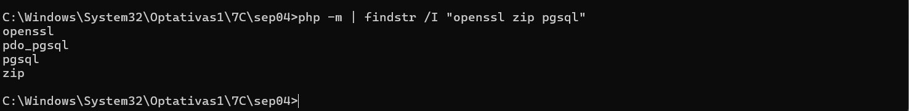
Captura 3. Verificación de las extensiones habilitadas en PHP.
4
Descarga e instalación de Composer
Se descargó el instalador de Composer utilizando
PHP. Posteriormente, se ejecutó el instalador para generar el archivo
composer.phar, el cual permite utilizar Composer
como administrador de dependencias para proyectos PHP.
php -r "copy('https://getcomposer.org/installer', 'composer-setup.php');"
php composer-setup.php
php composer.phar --version
Finalmente, se verificó la instalación consultando la versión
de Composer desde la línea de comandos.
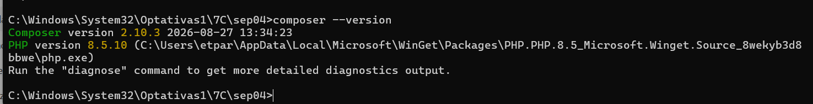
Captura 4. Instalación y verificación del funcionamiento de Composer.
5
Configuración global de Composer
Para poder utilizar Composer desde cualquier
directorio del sistema, se creó la carpeta
C:\Composer y se colocó dentro de ella el archivo
composer.phar.
Posteriormente, se creó el archivo
composer.bat, encargado de ejecutar Composer
mediante PHP.
@echo off
php "C:\Composer\composer.phar" %*
Después, la ruta C:\Composer se agregó a la
variable de entorno Path de Windows. De esta
manera, Composer puede ejecutarse desde cualquier ubicación
utilizando directamente el comando composer.
composer --version
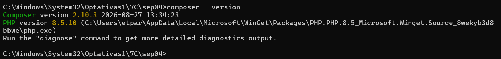
Captura 5. Verificación de Composer configurado globalmente.
6
Preparación de la carpeta del proyecto
Se trabajó dentro de la carpeta destinada a la práctica. Desde
esta ubicación se instalaron las dependencias necesarias y se
crearon posteriormente los archivos PHP correspondientes al
proyecto.
Mediante la terminal de Windows se accedió al directorio de
trabajo utilizando el siguiente comando:
cd /d C:\Windows\System32\Optativas1\7C\sep04
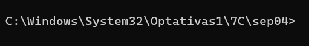
Captura 6. Acceso al directorio utilizado para desarrollar la práctica.
7
Instalación de Laminas DB
Con Composer configurado correctamente, se instaló
Laminas DB dentro de la carpeta del proyecto.
Esta biblioteca permite trabajar con bases de datos desde PHP
mediante diferentes adaptadores.
Para realizar la instalación se utilizó el siguiente comando:
composer require laminas/laminas-db
Al finalizar la instalación, Composer generó los archivos
composer.json y composer.lock,
además de la carpeta vendor, donde se almacenan
las dependencias utilizadas por el proyecto.
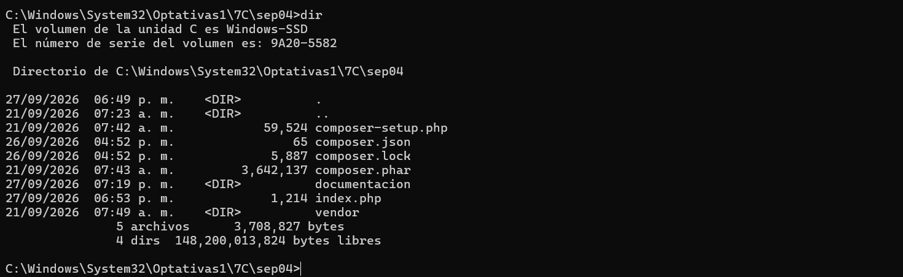
Captura 7. Instalación de Laminas DB y generación de las
dependencias del proyecto.
8
Preparación de PostgreSQL
Antes de realizar la conexión con la base de datos en la nube,
se verificó que PHP tuviera habilitados los controladores
necesarios para trabajar con PostgreSQL.
Las extensiones pdo_pgsql y
pgsql permiten establecer la comunicación
entre PHP y una base de datos PostgreSQL.
Para comprobar que ambas extensiones estuvieran disponibles,
se ejecutó el siguiente comando:
php -m | findstr /I "pgsql"
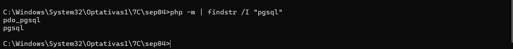
Captura 8. Verificación de los controladores de PostgreSQL
habilitados en PHP.
9
Preparación de la base de datos en Neon
Se utilizó Neon como servicio de PostgreSQL
en la nube. Dentro del proyecto se trabajó con la base de datos
neondb y el esquema public.
En la base de datos se utilizó la tabla
usuarios, compuesta por los campos
id, nombre,
email y creado_en.
También se agregaron registros de prueba que posteriormente
serían consultados desde PHP.
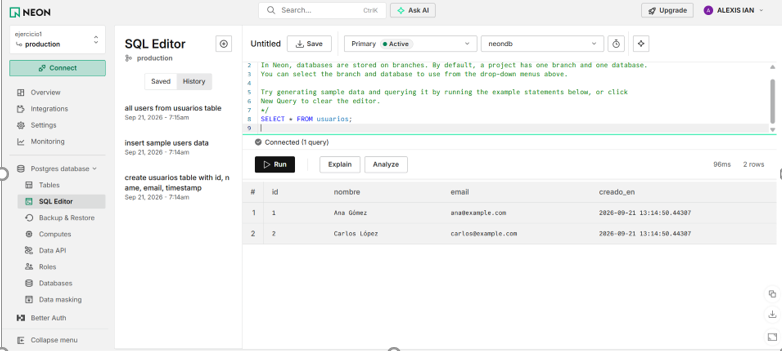
Captura 9. Tabla usuarios y registros almacenados en la
base de datos PostgreSQL de Neon.
10
Obtención de los datos de conexión
Una vez preparada la base de datos, se accedió a la opción
Connect de Neon para obtener los parámetros
necesarios para establecer la conexión desde PHP.
Entre los datos proporcionados por Neon se encuentran el
host, la base de datos,
el usuario, la contraseña
y el modo SSL. Estos parámetros serían utilizados
posteriormente para configurar la conexión mediante Laminas DB.
Por motivos de seguridad, la contraseña de la base de datos
se mantuvo oculta durante la documentación de la práctica.
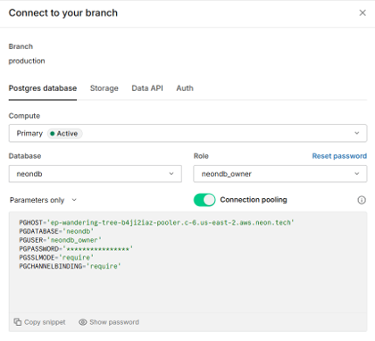
Captura 10. Obtención de los parámetros de conexión
de la base de datos desde Neon.
11
Apertura del proyecto en Visual Studio Code
Después de preparar la base de datos y obtener los datos de
conexión, se abrió la carpeta del proyecto en
Visual Studio Code para comenzar a trabajar
con los archivos PHP.
Desde la terminal, estando ubicado en el directorio del proyecto,
se utilizó el siguiente comando:
code .
Este comando permite abrir en Visual Studio Code la carpeta
correspondiente al directorio actual.
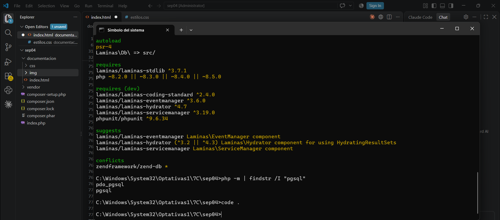
Captura 11. Apertura de la carpeta del proyecto en
Visual Studio Code.
12
Creación del archivo index.php
Dentro de la carpeta del proyecto se creó el archivo
index.php. Este archivo contiene la lógica
necesaria para realizar la conexión con la base de datos y
posteriormente consultar la información almacenada en PostgreSQL.
Primero se cargó el archivo autoload.php
generado por Composer. Esto permite utilizar las clases de las
dependencias instaladas en el proyecto.
require_once __DIR__ . '/vendor/autoload.php';
Posteriormente, se importó la clase
Adapter perteneciente a Laminas DB, la cual
será utilizada para establecer la comunicación con PostgreSQL.
use Laminas\Db\Adapter\Adapter;
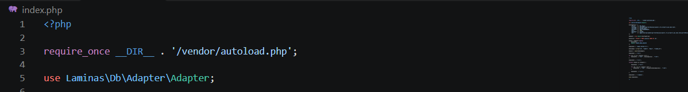
Captura 12. Creación del archivo index.php y carga de
Laminas DB mediante el autoload de Composer.
13
Configuración de la conexión
Para establecer la comunicación con PostgreSQL se creó un arreglo
de configuración utilizando los datos de conexión proporcionados
por Neon, como el host, la base de datos, el usuario, la contraseña
y la configuración SSL.
Posteriormente, se creó un objeto de tipo
Adapter utilizando la configuración establecida.
Este objeto permite que Laminas DB realice la comunicación entre
la aplicación PHP y la base de datos PostgreSQL alojada en Neon.
$adapter = new Adapter($configArray);
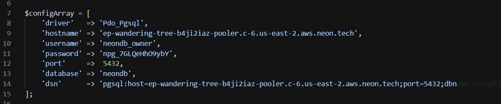
Captura 13. Configuración de la conexión entre PHP,
Laminas DB y PostgreSQL alojado en Neon.
14
Consulta de la tabla usuarios
Una vez establecida la conexión con PostgreSQL, se creó una
consulta SQL para recuperar todos los registros almacenados
en la tabla usuarios.
La consulta fue ejecutada mediante el objeto
Adapter de Laminas DB, utilizando el modo
de ejecución de consultas.
$consulta = "SELECT * FROM usuarios";
$tabla = $adapter->query($consulta, Adapter::QUERY_MODE_EXECUTE);
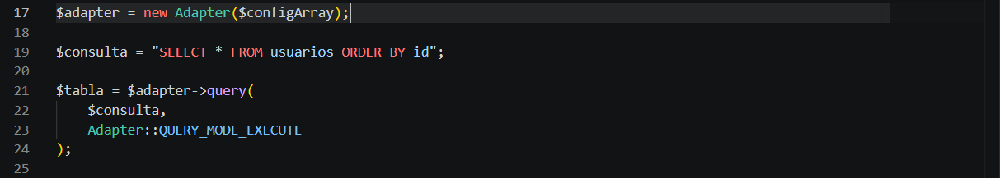
Captura 14. Consulta de los registros almacenados
en la tabla usuarios mediante Laminas DB.
15
Generación de la tabla HTML
Después de obtener los registros almacenados en PostgreSQL,
los datos recuperados se recorrieron desde PHP para mostrarlos
de forma organizada en el navegador.
Se definieron los campos id,
nombre, email y
creado_en, correspondientes a las columnas
de la tabla usuarios.
$nomcampos = array("id", "nombre", "email", "creado_en");
Posteriormente, se generó una tabla HTML con sus respectivos
encabezados y filas para presentar cada uno de los registros
recuperados de la base de datos.
$tablahtml = '<table border="1">';
echo $tablahtml;
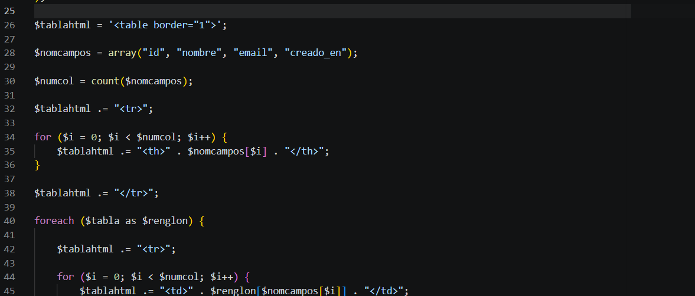
Captura 15. Código PHP utilizado para generar la tabla HTML
con los registros obtenidos de PostgreSQL.
16
Ejecución del servidor PHP
Una vez terminado el código necesario para realizar la conexión,
consultar la base de datos y generar la tabla HTML, se inició el
servidor de desarrollo integrado de PHP.
Desde la terminal, ubicada en la carpeta del proyecto, se ejecutó
el servidor local utilizando el puerto 8080.
php -S localhost:8080
Al ejecutar este comando, PHP inició un servidor web local que
permitió acceder al archivo index.php desde
el navegador.
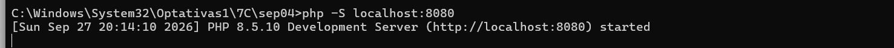
Captura 16. Ejecución del servidor local de PHP en el
puerto 8080.
17
Visualización del resultado
Con el servidor local de PHP en ejecución, se abrió el navegador
web y se accedió a la dirección localhost:8080.
http://localhost:8080
Al acceder a esta dirección, el archivo
index.php se ejecutó automáticamente. La
aplicación realizó la conexión con PostgreSQL alojado en Neon,
ejecutó la consulta sobre la tabla usuarios
y mostró los registros obtenidos mediante una tabla HTML.
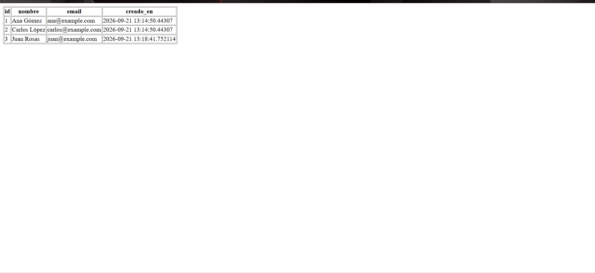
Captura 17. Visualización de los registros de la tabla
usuarios desde el navegador.
18
Resultado final
El resultado final permitió comprobar el funcionamiento completo
del proyecto. PHP utilizó Composer para cargar las dependencias
necesarias de Laminas DB y establecer la comunicación con
PostgreSQL alojado en Neon.
Una vez establecida la conexión, se ejecutó una consulta sobre
la tabla usuarios. Los registros recuperados
fueron procesados mediante PHP y finalmente se mostraron en una
tabla HTML desde el navegador.
Flujo de funcionamiento
PHP → Composer → Laminas DB → PostgreSQL en Neon →
Consulta de datos → Tabla HTML en el navegador
Captura 18. Resultado final de la conexión y consulta
de PostgreSQL en Neon desde PHP.